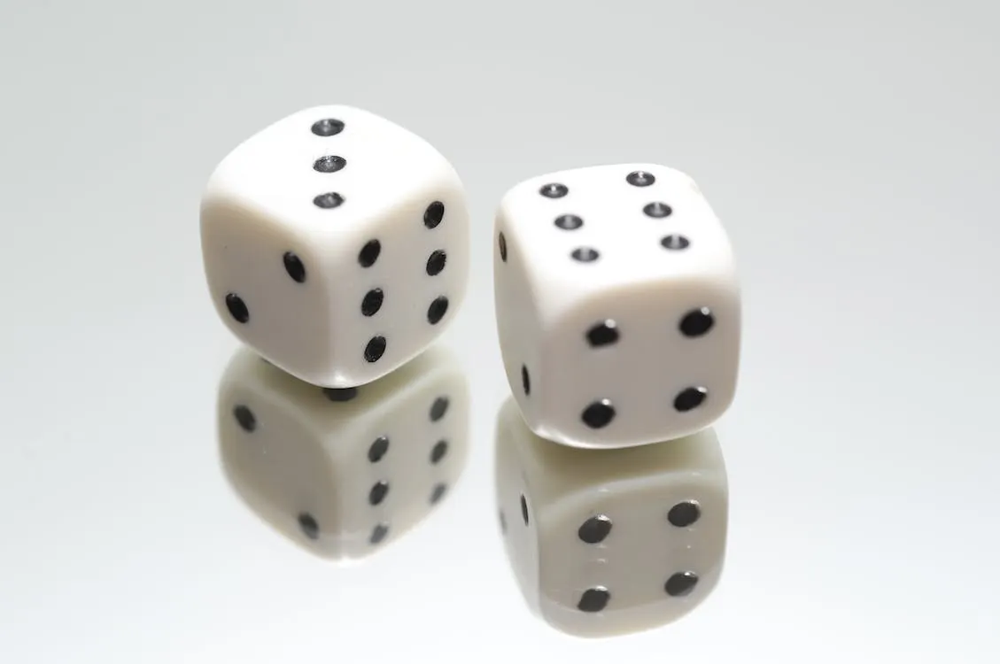

Basic Probability: Expectation and Variance
Introduction to the basic ideas of expectation and variance in probability

Often, when looking at a dataset, it is very useful to extract a few key parameters that can give us a quick insight into our data. Two of those parameters are the expectation (mean) and the variance.
In this article, we focus on discrete random variables, but the main ideas hold for a continuous random variables as well.
The Expectation
The expectation is the mean of a random variable. Let’s start by defining it mathematically:
\[ \mathbb{E}[X] = \sum_{x \in \Omega} x \cdot P(x) \]
where \(X\) is a discrete random variable, \(\Omega\) is the sample space, \(x\) is a state the random variable \(X\) can take, and \(P(x)\) is the probability of the outcome \(x\). We can think about this formula as a weighted mean with the probability values as the weights.
We can show that this formula is actually related to the mean by considering the sample mean:
\[ \text{mean} = \frac{1}{N} \sum_{i=1}^{N} x_i \]
For simplicity we assume that \(x_i\) can take only \(M\) values so we can rewrite the formula above as
\[ \text{mean} = \sum_{n=1}^{M} x^{(n)} \times \frac{\text{number of times } x^{(n)} \text{ appears in the data}}{N} \]
where the expression in the fraction is the percentage of each of the \(M\) values in the dataset, which can be seen as the probability of getting each value. That’s exactly the definition of the expectation as in the first equation.
Even so, there is a fundamental difference between the expection value and the sample mean. The sample mean is the empirical mean we get from the data we have. The expectation value, however, is the theoretical mean we will have from the ideal sample (or the “real” data distribution).
Properties of the Expectation
Expectation of a function of a random variable: \[ \mathbb{E}\left[g(x)\right] = \sum_{x\in \Omega} g(x)P(x) \] Hand-waving proof: Applying the function \(g()\) on \(x\) changes the value, but does not change the probability to get the new value. It is still the same probability of getting \(x\), and so the probability of getting \(g(x)\) is the same as in the regular case of \(x\).
Linearity: \[ \mathbb{E}[g(X) + h(X)] = \mathbb{E}[g(X)] + \mathbb{E}[h(X)] \] Proof: \[ \begin{aligned} \mathbb{E}[g(X) + h(X)] &= \sum (g(X) + h(X))P(X) \\ &= \sum (g(X)P(X) + h(X)P(X)) \\ &= \sum g(X)P(X) + \sum h(X)P(X) \\ = \mathbb{E}[g(X)] + \mathbb{E}[h(X)] \end{aligned} \]
Scale by constant: \[ \mathbb{E}[\alpha \cdot X] = \alpha \cdot \mathbb{E}[X] \] Proof: \[ \mathbb{E}[\alpha X] = \sum_i \alpha x P(x) = \alpha \sum_i x P(x) = \alpha \mathbb{E}[X] \]
DC shift: \[ \mathbb{E}[X + \alpha] = \mathbb{E}[X] + \alpha \] Proof: \[ \mathbb{E}[X + \alpha] = \sum_i (x + \alpha) P(x) = \sum_i x P(x) + \sum_i \alpha P(x) = \mathbb{E}[X] + \alpha \] while in the last step we used the fact that the sum of probabilities over all the states is 1.
· · ·
The Variance
The variance of a random variable X is given by: \[ \text{Var}[X] = \sigma^2 = \mathbb{E}[(X - \mu)^2] \] where \(\mu = E[X]\). The variance measures the deviation of a random variable relative to its expectation value (the mean). In other words, it measures the average squared distance between the random variable value and its mean.
The variance can also be written as:
\[ \text{Var}[X] = \mathbb{E}[X^2] - (\mathbb{E}[X])^2 \]
Proof: \[ \begin{align*} \text{Var}[X] &= \mathbb{E}[(X - \mu)^2] \\ &= \mathbb{E}[X^2 - 2\mu X + \mu^2] \\ &= \mathbb{E}[X^2] - 2\mu \mathbb{E}[X] + \mathbb{E}[\mu^2] \\ &= \mathbb{E}[X^2] - 2\mu^2 + \mu^2 \\ &= \mathbb{E}[X^2] - \mu^2 \\ &= \mathbb{E}[X^2] - \mathbb{E}[X]^2 \end{align*} \]
The square root of the variance is called the standard deviation and is written as \(\sigma\). \(\sigma\), as opposed to the variance — σ², has the same units as the expectation value.
Properties of the Variance
Scale by constant: \[ \text{Var}[\alpha X] = \alpha^2 \text{Var}[X] \] Proof: \[ \text{Var}[\alpha X] = \mathbb{E}[(\alpha X - \alpha \mu)^2] = \mathbb{E}[\alpha^2 (X - \mu)^2] = \alpha^2 \mathbb{E}[(X - \mu)^2] = \alpha^2 \text{Var}[X] \]
DC shift: \[ \text{Var}[X + \alpha] = \text{Var}[X] \] Proof: \[ \begin{align*} \text{Var}[X + \alpha] &= \mathbb{E}[(X + \alpha - E[X + \alpha])^2] \\ &= \mathbb{E}[(X + \alpha - (E[X] + \alpha))^2] \\ &= \mathbb{E}[(X - E[X])^2] \\ &= \text{Var}[X] \end{align*} \]